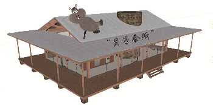
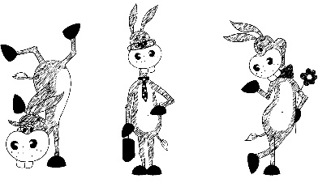

黑毛驴的“月子会所”
文/ 李蒙蒙 【东阿阿胶股份有限公司】
“月子会所”是时下热搜榜热词之一，多少孕妈妈在此迎接新生儿的到来，如果你只知道人类的“月子会所”已经OUT了，黑毛驴的“月子会所”已强势来袭。没错儿，它就是东阿阿胶打造的高能黑毛驴“月子会所”，在此迎接小毛驴的到来，同时为驴妈妈做好产前孕检、产后修复工作。
自2016年2月份以来，东阿黑毛驴牧业由“育肥+繁育”转型为繁育模式。通过对外置换留存基础母驴发展繁育，内部培养畜牧兽医专业人才，全力打造黑毛驴“月子会所”，实施毛驴活体循环开发战略，开发驴奶等毛驴全身综合价值，为更多人的健康保驾护航。
走进养殖区，映入眼帘的是大多数人从没见过的全身乌黑，没有一根杂毛的黑毛驴。大家会惊讶有这样的毛驴？中医认为“黑色属水入肾经，可补先天之本”，炼制好阿胶的必备原料毋容置疑当属黑毛驴的乌驴皮。
能繁母驴进行繁育的年龄须达到两岁以上，需怀胎十二个月，四、五月份是毛驴繁育旺季，路过光伏发电孕驴舍,一头头“孕驴妈”有的站在驴舍外围的运动场，有的安安静静的躺在一旁，听着驴舍外围播放的“胎教”音乐，静待小毛驴的到来，对准驴妈来说这样的日子应该舒服到爆吧。分娩驴舍更是为临产的准驴妈打造的“产室”，内置设备齐全，为准驴妈顺利生产提供好环境。
打造高能黑毛驴“月子会所”发展繁育，优秀畜牧技术人才是基础。东阿黑毛驴牧业采用“内培外引”方式引进畜牧技术人才，通过老、中、青三代“经验”及“技术”优势互补不断提升团队专业水平。协调黑毛驴研究院优势人才资源，加强牧业配种技术人员培训。自2016年2月以来，在黑毛驴研究院姜桂苗、王涛等畜牧技术经理协助下，依次开展了毛驴发情鉴定、直肠检查、B超技术应用及毛驴接产知识的培训。在日常生产实践中，技术人员互相交流每日、每周总结的配种过程中实际问题，共同学习提高。
每年的4-6月为毛驴配种黄金季节，牧业技术人员放弃五一假期休息时间，坚决“不放过”任何一头毛驴，利用一切可以利用的时间完成毛驴受孕工作，只为来年毛驴顺利繁育。
东阿黑毛驴牧业作为原料中心重要一部分，发展繁育、提高受孕率是落实毛驴活体循环开发的根本。值此公司“十三五”战略启航年，牧业全体员工已打起十二分的精神，为东阿阿胶的发展贡献智慧和力量。（插图/李蒙蒙）
- 分享到: